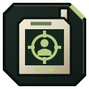

Colossus
Kur rasti Colossus MW4 DMZ: Chang-san Air Base, Cheongun Village, Songdo Wharf. Vadas Hajin žemėlapyje – paieškos zona, langelis ir grobis.
- Tipas
- Vadas
- Galimos zonos
- Chang-san Air Base, Cheongun Village, Songdo Wharf, Imjin Farmland, Cheonwang Peak Array, NuriGo Mall, 14th Political Prison, Haneul Nuclear Reactor, Deadtown, Wolves Stadium
- Tikslumas
- Galima klajojimo zona
Galimos zonos 13
- B6Chang-san Air Base
- F4Cheongun Village
- I7Songdo Wharf
- D8Imjin Farmland
- E6Cheonwang Peak Array
- H6NuriGo Mall
- C314th Political Prison
- I4Haneul Nuclear Reactor
- B7Deadtown
- H7Songdo Wharf
- F7Wolves Stadium
- G7Wolves Stadium
- C7Deadtown
Vadai juda ir pasirodo ne kiekviename reide. Programos apskritimai rodo, kur vadas buvo matytas; tai ne jo dabartinė vieta.
Grobis
Žiūrėk žemėlapyje DMZ Tactical programoje